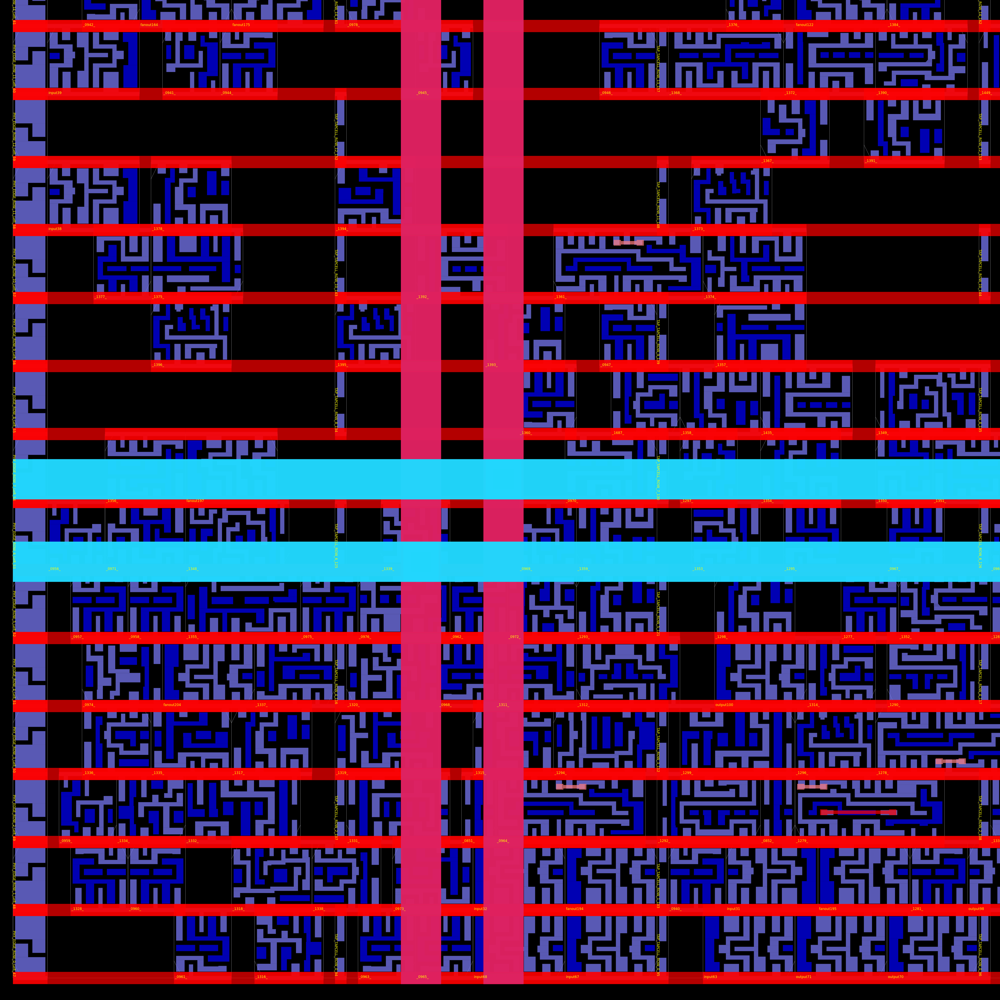
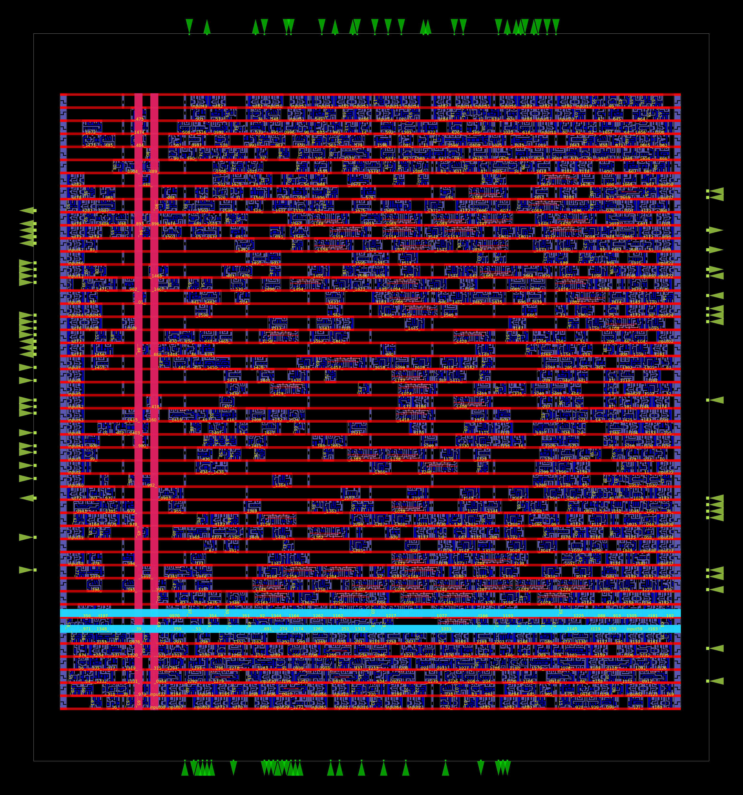

A formally verified RV32I ALU, hardened through a complete open-source physical design flow — synthesized, placed, routed, and signed off across nine process-voltage-temperature corners. Every number on this page is measured, not estimated.
Every rectangle below is a real sky130_fd_sc_hd logic gate — placed, powered, and routed. This is not a block diagram. It is the geometry that would be etched onto a wafer.

The horizontal red bands are alternating power and ground rails; each row of cells between them is one standard-cell row. The pink vertical columns are tap cells — substrate ties inserted on a fixed pitch to prevent latch-up. The dark gaps are genuine placement whitespace at 64.7% core utilization, before fill insertion.
The full die measures 140.7 × 151.4 µm — about the width of two human hairs — and carries 1,293 logic cells implementing all ten RV32I ALU operations plus a 103-pin I/O ring. Routed wirelength totals 38.2 mm of metal across the layer stack.

Silicon does not run at one speed. Process variation, supply voltage, and temperature stretch the same physical design across a 1.8× frequency range. Static timing analysis at all nine corners is how you know the worst case — not hope for the best one.
| Corner | Process | V / T | Worst slack | Margin |
|---|---|---|---|---|
| min_ff_n40C_1v95 | fast | 1.95 V · −40 °C | +15.422 ns | |
| nom_ff_n40C_1v95 | fast | 1.95 V · −40 °C | +15.330 ns | |
| max_ff_n40C_1v95 | fast | 1.95 V · −40 °C | +15.237 ns | |
| min_tt_025C_1v80 | typical | 1.80 V · 25 °C | +11.883 ns | |
| nom_tt_025C_1v80 | typical | 1.80 V · 25 °C | +11.752 ns | |
| max_tt_025C_1v80 | typical | 1.80 V · 25 °C | +11.623 ns | |
| min_ss_100C_1v60 | slow | 1.60 V · 100 °C | +1.756 ns | |
| nom_ss_100C_1v60 | slow | 1.60 V · 100 °C | +1.511 ns | |
| max_ss_100C_1v60 | slow | 1.60 V · 100 °C | +1.267 ns |
The binding corner is max_ss_100C_1v60: slow silicon, hottest junction, lowest rail. A linear sweep of the clock constraint — 32, 33, 34, 40, 50, 60 ns — produced slack that tracked the period exactly one-for-one, proving the combinational critical path is a fixed 31.733 ns, independent of the target.
That gives a measured ceiling of 31.5 MHz worst-case, rising to 56.3 MHz in the fast corner. Same mask, same transistors — a 1.8× spread from physics alone. This is the number a datasheet would print, derived the way a datasheet derives it.
A complete LibreLane Classic flow — 80 stages, Nix-reproducible, no proprietary tools. The interesting part is not that the flow ran; it is what each stage revealed about the design.
The ALU is purely combinational — no clock, no state — so clock tree synthesis is correctly a no-op. That was verified rather than assumed: a silently failed CTS looks identical to a correctly skipped one unless you check.
Zero LVS mismatches, zero antenna violations, zero inferred latches. The last one is the silent killer in combinational SystemVerilog — an incomplete always_comb branch quietly synthesizes state where none should exist. Confirmed absent by the flow's lint stage, not assumed.
Buffer count, cell count, and die area were bit-for-bit identical at every clock period from 32 ns to 60 ns. That empirically rules out setup timing as the reason for the 208 repair buffers in the netlist — they exist to satisfy max-slew and max-cap electrical rules. Sweeping the constraint and watching nothing move is the proof.
Gate-level tracing with OpenSTA located a five-gate OR/NOR chain (or4b→or4→or3→or4→or4→nor4) implementing the 32-bit zero-flag as a flat linear reduction instead of a balanced tree — a concrete, named optimization target rather than a vague "make it faster."
Max-slew warnings persist in six corners, max-cap in one — electrical rule margins, not sign-off blockers. The larger lever is architectural: the ripple-carry adder's O(n) carry chain sets the 31.7 ns floor. Replacing it with carry-lookahead is the next iteration, and the before/after frequency delta will be measured with this same flow.
The config, the metrics, the render scripts, and the sign-off GDS are all in the repository. One command regenerates the flow; the TCL scripts regenerate every image on this page. Nothing here is a screenshot that can't be rebuilt.